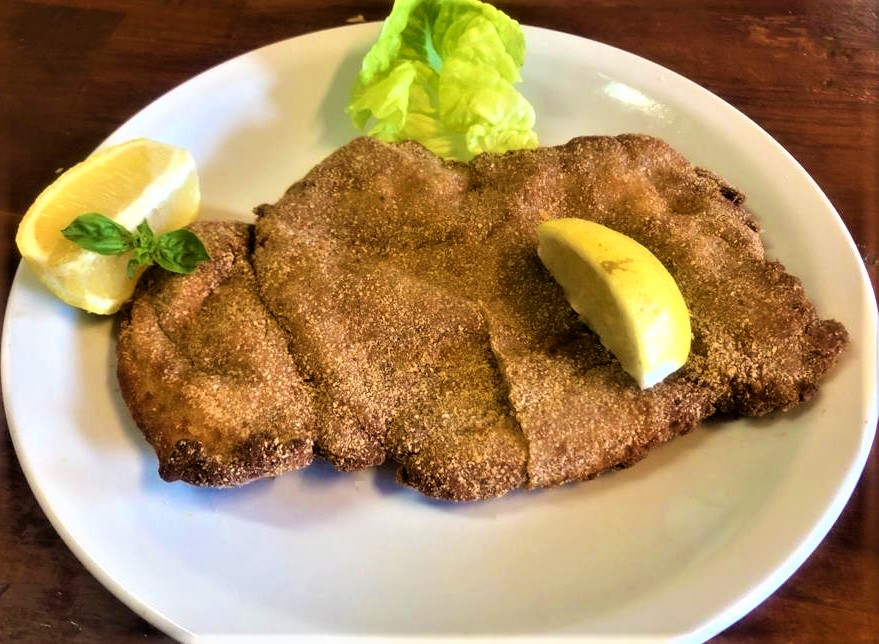

Receta de milanesas de carne Argentinas
Uno de los platos favoritos de los argentinos

Ingredientes
- 4 huevos
- 2 Dientes de ajo
- Perejil picado
- Sal y pimienta,a gusto
- Pan rallado
- 1 kilo de nalga o peceto para milanesa
Preparacion
- Pelar los ajos y picar junto con el perejil.
- Colocar los huevos en un bowl y batir hasta disolverlos bien. Luego agregar el perejil, los ajos y condimentar con sal y pimienta.
- Colocar la carne en la mezcla anterior, deje unos minutos, retirar y pasar por pan rallado
- En una sartén con abundante aceite caliente freír las milanesas. Retirar y escurrir en papel absorbente.